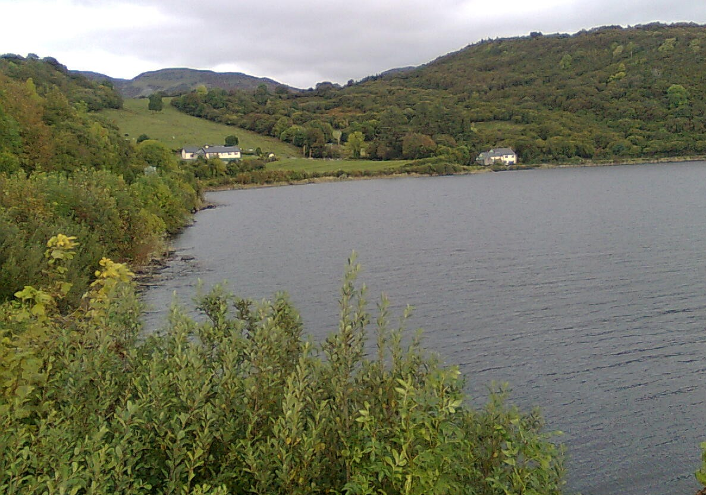
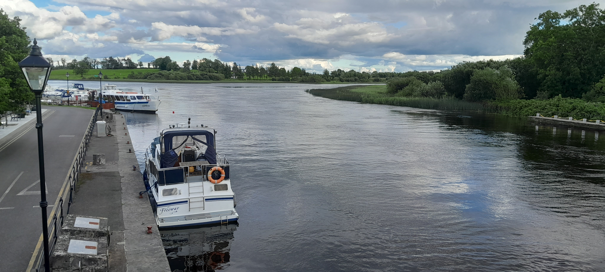

Welcome to Leitrim Today, where users registered on this site can post updates of news and events from around the county.
The information contained here will also allow visitors and holiday makers to discover local points of
interest as they visit County Leitrim.
The image to the right shows the area of North Leitrim where I grew up.
I walked this hill most mornings and evenings as a teenager checking on the cattle for my father.
There is no way to describe the feeling I enjoyed of being on a windswept hill in stormy weather,
feeling that connection to nature and the land of my forefathers.
I hope to raise awareness of Leitrim and all it has to offer to as wide an audience as possible,
it is no coincidence the people from Britain, Germany, Spain, France, Slovakia, Lithuania, Poland and
beyond choose to live here.
From
Lough Gill (left), Lough Melvin and the beautiful glaciated valleys of Glenade and Glencar
(including of course Glencar Waterfall),
in the north of the county,
to the Shannon-Erne Waterway which runs from Leitrim Village via
Ballinamore further south, there are no shortage of rivers and lakes, wooded areas and mountains,
dramatic waterfalls, and empty space to explore.
There are historic sites such as Parkes'Castle on the shores of Lough Gill, Creevelea Friary near
Dromahair, Hamilton's Castle
in Manorhamilton, Sean Mac Dhiarmada's cottage between Glenfarne and Kiltyclogher, most towns and
villages have places of note to visit.
There is abundant wildlife with plenty for birdwatchers and wildlife enthusiasts to enjoy, around my
home I see Goldfinches, Bluetits,
Great tits, Robins, Sparrows, Swans, Kingfishers, Cranes, as well as Rooks, Ravens and Crows. In
addition to birds there are Badgers,
Foxes, Hares, Minks and Red Deer in my locality, Red Squirells are rare but can be found
Carrick-on-Shannon is the county town, the largest in County Leitrim by a good margin and yet the smallest such in Ireland. Carrick is popular with stag and hen nights, weddings and weekend life and it is populated by over 4,000 people including some of the nationalities listed above. There are boat hire companies and tours on the River Shannon. Carrick-on-Shannon is on the N4 roadway which connects Sligo to Dublin and there are regular bus and train connections.